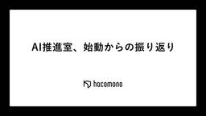

hacomono TECH BLOG
https://techblog.hacomono.jp/
フィットネスクラブやスクールなどの顧客管理・予約・決済を行う、業界特化型SaaS「hacomono」を提供する会社のテックブログです！
フィード
OpenTelemetry Collectorに全部任せろ
hacomono TECH BLOG
この記事は hacomono Advent Calendar 2025 の7日目の記事です はじめに こんにちは。SRE部のiwachan(@Diwamoto_)です。 気づけばhacomonoに入ってもう2年になります。 hacomonoに入社してすぐに生まれた娘ももう少しで2歳です。成長曲線を大きく上に逸脱している娘は12kgを突破し、心なしか自分の腕も太くなっているような気がします。 今回は、hacomonoのO11yに対する課題を解決するために OpenTelemetry を導入しようとした奮闘の記録を残します。 TL;DR OpenTelemetry Collector Contri…
7分前
tsconfig や TailwindCSS などの設定を NuxtLayer を使って共通化する
hacomono TECH BLOG
この記事は hacomono Advent Calendar 2025 の6日目の記事です みゅーとんです. アドカレ 6日目です. hacomono アドベントカレンダーでは今回 3 回のノルマがあるので頑張ります. 現在 hacomono では新規開発向けの基盤として Nuxt Layer を用いて, 様々な nuxt やら 言語設定やらを共通化する動きをしています.その一端を紹介できればと思います. はじめに Nuxt Layer とは ? 公式ガイドはこちら ざっくりいえば Nuxt の既存のプロジェクトを継承・拡張したプロジェクトを作る機能です. Nuxt のベースプロジェクトに実装…
1日前

AI推進室、始動からの振り返り
hacomono TECH BLOG
この記事は hacomono Advent Calendar 2025 の3日目の記事です こんにちは！株式会社hacomono AI推進室の JK です。 私は2025年7月に入社し、新設されたAI推進室に配属されました。 AI推進室が本格始動してから「AI Driven Company」への変革を目指して様々な施策を打ってきましたが、今回はその中でも印象的だった取り組みをご紹介したいと思います。 なお、AI推進室の立ち上げや全社的なAI活用の取り組みについては、CTO工藤のnote記事でも詳しく紹介されていますので、ぜひご覧ください。 1. GeminiだけでスライドAI生成（通称：まじん…
4日前
Claude Code × Playwright MCP で自動デバッグ 5
5
hacomono TECH BLOG
この記事は hacomono Advent Calendar 2025 の1日目の記事です こんにちは、hacomonoでエンジニアをしているタクローです！ デバッグ作業って本当にめんどくさい。 画面操作 → データ確認 → また画面操作…というループに時間を奪われ、もっと効率的にやれないものかと常々思っていました。 そんな中いろいろ調べてみたところ、Claude Code と Playwright MCP を組み合わせればある程度自動化できるのでは？ という手応えを得たため、実際に開発中の機能のバグ修正に導入してみました。 何度か試した結果、かなり良い感じに動いてくれたので、この記事にまとめ…
6日前

AIでテスト設計を自動化：チームの事例紹介
hacomono TECH BLOG
こんにちは、hacomonoでエンジニアをしているタクローです。 私たちのチームでは、ここ数ヶ月にわたりAIを活用したテスト分析とテストケース作成の自動化に取り組んできました。 運用を開始してからおよそ2ヶ月が経過し、実際にチームの生産性や品質にポジティブな成果が見えてきたため、今回はその取り組み内容と学びを記事としてまとめました。 背景：テスト設計フローとその課題 私たちのチームでは、QAリソースが十分でない状況を背景に、 テスト工程を効率的に進める方法を検討していました。 その中で次のような方針が挙がっていました。 エンジニアにもテスト観点を養ってもらい、開発段階から品質意識を高める テス…
12日前
リバースされることを想定したメカニカルセキュリティ戦略
hacomono TECH BLOG
こんにちは、hacomono メカハードエンジニアのURAと申します。 hacomonoではSaaSのサービスと連携したIoTハードウエアの製造も行っており、QR入退館リーダーや水素水サーバーの連携など、QRコードをフックとした認証が繋がる仕組みやデバイスの製造も手掛けております。 私たちの製品、とりわけロックQR（QR入退館サービス）で提供しているデバイスは、会員証となるQRコードを持っている人のみ施設内に入れるようにし、QRを持っていない人は通さないというセキュリティ関連製品です。 ハードウエアにおけるセキュリティとは 💡 セキュリティとはどういう意味ですか？ AI による概要 セキュリテ…
19日前
QAタスク標準化への挑戦：テスト分析の属人化を打ち破るAIモデル活用と、現場に存在する課題の考察
hacomono TECH BLOG
こんにちは！hacomonoのQAチームに所属している「ゆう」です。 私たちhacomono QAチームは、業務でのAI活用を加速しています。特に予約ドメインチームでは、テスト分析の属人化解消に向けた取り組みを進めています。 本記事では、多くのQA組織も直面する「属人化の壁」と、AI活用を始めたQAチーム全体の「リアルな課題感」に焦点を当てます。 私たちが取り組んだ課題：QA業務の壁「属人化」 従来のテスト分析は、時間や経験、ドメイン知識に依存しやすく、開発のボトルネックになりがちです。 とくに新機能や複雑な改修では、熟練メンバーへの依存が高まり、次の課題が生じます。 分析のリードタイム長期化…
1ヶ月前
Takumi AIを活用したSAST脆弱性診断をしてみた
hacomono TECH BLOG
はじめに こんにちは、セキュリティ推進グループの徐承賢(a.k.a. sunchan)です。前回、Burp AIを活用したDASTの脆弱性診断について紹介しました(Burp AI: セキュリティ診断にAIの力を借りる - hacomono TECH BLOG)。今回はその続編として、「Takumi AI」を使い、実際のプロジェクトでソースコードの脆弱性診断(SAST: Static Application Security Testing)を実施した結果をお伝えします。 本記事では、AI技術を活用した脆弱性診断の実践を通じて得られた知見と、効果的な活用方法についてお伝えできればと思います。 T…
1ヶ月前
AIを相棒に！LLMDAYを開催してみた
hacomono TECH BLOG
こんにちは！QA部の塩濱です。 hacomonoではニックネーム文化なのではまちゃんと呼ばれております。 最近息子がつかまり立ちをできるようになり、成長の早さに驚いています。 さて（？）、成長というとAIの成長も凄まじく、 何かイベントに参加してみると事あるごとに「AI」のワードが飛び交うようにもなってきました。 hacomonoでもAI推進室が立ち上がり、ますますAIに対する勢いを感じております。 今回はそんなAIに向き合う時間を作るため、 QAチーム内で約1ヶ月間実験的にLLMDAYを開催した話をします。 開催に向けて、以下の記事にとてもお世話になりましたので添付させていただきます。 PC…
1ヶ月前
Claude Code活用ナレッジ集 - 開発フローに沿った実践的な工夫
hacomono TECH BLOG
こんにちは。hacomonoでプロダクトエンジニアをしているタクです。 7月からClaude Codeを利用して開発に取り組んでいます。最初はClaude Codeをうまく使いこなせずにかえって時間がかかってしまうこともありましたが、チームメンバーと「こんな使い方をしたらうまくいった」「こうすれば失敗が減った」といった小さな発見を共有し合う中で、少しずつコツが見えてきました。 チーム内で定期的にLLM勉強会を開催し、そこで共有された知見をNotionのナレッジベースに集約しています。Claude CodeだけでなくCursor、GitHub Copilotなど様々なAIツールの使い方が「プロン…
1ヶ月前
肥大化する Nuxt の Composables 関数をどう小さく設計するべきか
hacomono TECH BLOG
みゅーとんです。どうも 最近個人開発で Astro に凝っています. no-js いいですね, ウェブサイトが爆速で描画されるのは本当にすばらしい. CMS 運用前提の静的サイトはみんなこうあってほしいですね. 個人開発だといくらでも時間をかけて LightHouse スコアを 100 点満点に近づけることができるので, とても挑戦意欲が湧いて楽しいです. TL;DR 対象読者 Vue3+, Nuxt3+ のコード設計に悩む人 3 行でまとめ 複数ページにまたがって引き回さざるを得ないグローバル変数を一挙に composable 関数としてまとめてしまうと, 将来的に神 composable …
2ヶ月前
開発速度を加速させるマルチプロダクト基盤：Self-Service提供への挑戦
hacomono TECH BLOG
はじめに こんにちは。基盤本部プラットフォーム部のkaikaiです。 入社して1年3ヶ月ほど経ちました。まだ新人な気分でしたが、スタートアップ界隈だとベテランの域みたいです。(精進せねば) さて、本記事では、プラットフォームチームが現在開発を進めている「マルチプロダクト基盤」についてご紹介します。 このプロジェクトが目指すのは、事業スケールに不可欠な、開発者が「素早く、安全に、迷わず」開発できる仕組みを実現することです。この記事では、その背景から技術選定、現状と今後の展望までをお話しします。 構築の背景と課題 現在弊社ではhacomonoという一つのサービスを展開しています。 hacomono…
2ヶ月前
httpbinの読み方しっていますか？
hacomono TECH BLOG
こんにちは。運用保守部でエンジニアをやっています みつを です。 2023年6月に入社してはや二年と数ヶ月が経ち、現在も「外部のサービスと hacomono を繋げる」事に取り組んでいます。 外部のサービスと繋げると言えばその一つの手段がWebhookです。 Webhookではエンドポイントに疎通しない、疎通するが返答が遅い、想定外のhttp statusが返ってくる、リトライは想定通りに行われるか？の確認が重要となります。 皆様はどのような確認手段を利用していますか？ 今回はそんな日々で私を支えてくれるツール(httpbin)について、ご紹介させていただきます。 あしたのために（その２）ht…
2ヶ月前
画面のテストコードを無理しない書き方で書く
hacomono TECH BLOG
こんにちは。UX部のがーみーです。最近は植物が好きになり、花やら観葉植物を置くようになりました。みているだけで気持ちが落ち着きます。 この記事ではフロントエンドのテストコードについて、書かれるようになってきて出てきた問題を整理し、無理をしない書き方を探ります。 フロントエンドテストが書かれるようになった 私が入社した2023年はフロントエンドのテストコードがあまり書かれていませんでしたが、さまざまな取り組みによって、フロントエンドにも普通にテストコードが書かれるようになりました。いまでは Testing Library を利用して、ページやUIコンポーネントなど、画面に対するテストが書けるよう…
2ヶ月前
「この機能、本当に必要？」から脱却するために取り組んだこと
hacomono TECH BLOG
はじめに こんにちは、hacomono でプロダクトエンジニアとして日々開発に励んでいる renren です。 「プロダクトエンジニアとは？」と思われた方は、こちらのスライドや過去の記事にまとまっていますので、ぜひご覧ください。 "ウルトラジャンプ" な成長を支えるプロダクトエンジニアというキャリア - Speaker Deck 「プロダクトエンジニア」という役割を定義しましたというお話 - hacomono TECH BLOG プロダクトエンジニアとしての観点を詰め込んだ開発設計書のテンプレートを公開します - hacomono TECH BLOG 本記事で紹介する取り組みは、「"ウルトラジ…
2ヶ月前
IoTベンチャー出身のPdMが株式会社hacomonoに惹かれた理由
hacomono TECH BLOG
1. はじめに・自己紹介 こんにちは！hacomono IoT部でPdMを担当しているクレさんです。 2024年10月にhacomonoに入社してまだ1年弱の在籍期間ですが、過去のIoT業界での7年間の経験を活かしてhacomonoで新しい挑戦をしています。 私のキャリアは少し変わっていて、メンズシルバーアクセサリー販売の店長からスタートし、その後IT業界に転身。スマホゲーム業界で約10年、そして最後の7年間はスマートホームIoTベンチャーの取締役として開発・生産管理を担当していました。 前職のIoTベンチャーでは、スマート家電リモコンやスマートロックなど、ハードウェアとソフトウェアの両方を扱…
3ヶ月前
QAエンジニアによるAI活用事例：Claude Codeで実現するE2Eテスト開発の効率化
hacomono TECH BLOG
こんにちは、hacomonoQA部のたっきー（滝田）です。 hacomonoのQA部では自動テストの手段の1つにPlaywrightを利用しています。 今回は、Claude Codeを用いたEnd-to-End（E2E）テストの実装について紹介します。 はじめに 本記事の執筆サポートとしてClaude Codeを利用しております。 E2Eテストの実装、テックブログに向けて実装内容の整理、記事の下書きにもClaude Codeを用いております。 プロジェクト概要 対象システムは、会員管理、予約システム、決済処理、外部デバイス連携など、多岐にわたる機能を提供するWebアプリケーション「hacomo…
3ヶ月前
Site Reliability Engineeringをポジティブに捉える
hacomono TECH BLOG
はじめに こんにちは。SRE部のiwachan( @Diwamoto )です。 最近人生で初めて登壇をしました（資料）。hacomonoは私のSRE人生2社目ですが、ようやくエンジニアとしてやりたかった外部登壇や社外への貢献ができるようになり、とてもありがたく思っています。 💡 記事中のSREはSite Reliability Engineeringを指します。 職業としてのSREは記事中ではSREエンジニアとしています。 TL;DR 万事ポジティブに捉えた方が幸せになれる SREは「やらされるもの」ではなく「便利なツール」 その為に、SREエンジニアはやれることは何でもやるべき 想定読者 社…
3ヶ月前
【mysql】取得するデータ量が少ないときの方が実行時間が長くなることがあった
hacomono TECH BLOG
「3月以前の集計はすぐに終わるのに、4月の集計がいつまで経っても終わらない。」 feature部会計決済グループのこじこじです。 あれは今年の4月上旬の出来事でした。 hacomonoのとある月次集計機能を担当している私のもとに上記の問い合わせが飛び込んで来ました。 結論、mysqlのクエリオプティマイザの誤判断で、使われるべきindexが使われず、意図せずテーブルのフルスキャンが発生していたという事象でした。 最終的にはUSE INDEXを指定するようにクエリを修正し、意図したインデックスが強制的に使われるように修正をリリースしました。 発生した現象 この問い合わせが来たのは4月の上旬なので…
3ヶ月前
Go言語で運用品質を向上させるエラーハンドリングライブラリを作った
hacomono TECH BLOG
こんにちは、リアーキテクチャ＆イネーブルメント部のjunです。 普段はフレームワーク寄りの機能やライブラリの開発、パフォーマンスチューニング、リファクタリングなどなどプロダクトの土台を支える役割を担当しています。 今回は、運用品質向上のために開発した、Go言語のエラーハンドリングライブラリ「go-errorsx」の設計思想と活用方法をご紹介します。 ※ go-errorsxはまだ発展段階のライブラリです。APIの変更や機能追加が行われる可能性があります。また、ValidationErrorは開発中の機能で、将来的にcontribとして別パッケージに分離する可能性があります。 なぜ新しいライブラ…
4ヶ月前
モジュラーモノリス導入がもたらした功罪
hacomono TECH BLOG
こんにちは、プラットフォームチーム所属のmaco+（まこたす）です。 ちょうど2年前に「モノリスなRailsにモジュラーモノリスを導入した話」というタイトルで執筆させていただきましたが、その後の取り組み・経過について中間レポートをお伝えできたらと思います。 導入の背景 本題に入る前に導入の背景やポイントについて簡単におさらいしたいと思います。 導入検討当時、今後人数の増加が考えられる開発組織においてhacomonoプロダクトの開発生産性を下げないようにしたいという課題がありました。人数が増えると複数のチームから触れるようなコードに対しては認知負荷があがり責任の所在が曖昧になるものです。当時これ…
4ヶ月前
Claude Code が current branch の修正内容を正常に把握できない！そんなときは
hacomono TECH BLOG
どうも、みゅーとんです. 小ネタとして, Claude Code の応答に問題が起きたので調べてみた備忘録をまとめておきます. 何が起きたか？ 朝出勤して、続きの開発をやるかー！という意気込みで Claude Code を起動し, “今いるブランチの修正内容を一旦把握してください” と指示すると・・ なんか突然 2023年にあったっぽいブランチと HEAD を比較し始めました！どうしたんだ・・ この挙動は同じ指示をすると毎回発生しました. 再現性があるなら原因があるはずなので, 軽く調べてみました. 原因 3 行でまとめます. 当時は default branch の名前を定期的に変更しており…
4ヶ月前
AIにコードを調査させてみた
hacomono TECH BLOG
こんにちは。運用保守部のnacchiです。 今回は運用保守部の主な業務の一つである問い合わせ対応について、どうにかAIを活用して効率化を図れないかを検証してみた結果を書かせていただきます。 運用保守部では幅広い業務を行なっており、顧客からの問い合わせ対応や運用業務の仕組み化、システム改善・改修などを行なっています。 中でも顧客からの問い合わせ対応はウェイトが大きく、また時間的負担も大きい業務になっています。 問い合わせ件数はhacomono利用店舗の拡大に伴い増えており、運用保守部に来る問い合わせ件数は直近2ヶ月は毎月200件近くの問い合わせが来ています。 限られた人数・限られた業務時間でこの…
4ヶ月前
hacomonoのUXエンジニアとは？技術とデザインの架け橋として、ユーザー体験を追求するエンジニアの役割
hacomono TECH BLOG
こんにちは。hacomono UX部エンジニアの yasu です。 hacomonoでは、フィットネスクラブ・インドアゴルフ・24hジム・スイミングスクールなどのウェルネス領域の店舗運営を支える会員管理・予約・決済システムを提供しています。 この記事では、hacomonoでUXエンジニアという職種を定義するに至った背景から、その役割や求めるスキルなどをご紹介します。 なぜUXエンジニアという職種定義が必要になったのか？ hacomonoのプロダクト開発本部では、「プロダクトエンジニア」の定義は存在していましたが、UX部が求めるエンジニアの定義については明文化されていませんでした。 そこで今回、…
4ヶ月前
hacomonoプロダクトチームの社内イベント「6月だョ！全員集合 2025」を開催しました
hacomono TECH BLOG
はじめに こんにちは、Engineering Officeのぬんです。 東京でも毎日30度を超える真夏日が続いた6月下旬、hacomonoでは暑さに負けず全国からプロダクトチームのメンバーが集まる『6月だョ！全員集合 2025』が開催されました。 フルリモートで北海道から沖縄まで全国に社員が散らばるhacomonoでは、皆が顔や人となりを直に感じてもらえるよう、定期的にオフラインイベントを開催しています。 社内の半数を占めるプロダクトチーム全員が集まるこのイベントは全社員が集まる「hacofes」に次ぐ大イベント！ 当日会場には110名以上が集まり、一丸となってイベントを盛り上げてくれました。…
5ヶ月前
SORACOM VPGへの全面移行体験記 - 99%以上の移行を完了した実録
hacomono TECH BLOG
はじめに こんにちは！hacomonoのIoT部でバックエンドエンジニアをしているベーです。 hacomonoのIoT製品では数千台のデバイスがSORACOMのサービスを利用しており、今回はSORACOM VPG（Virtual Private Gateway）への移行プロジェクトについて、実際の移行体験と学んだことを共有したいと思います。 結論から言うと、現在99.5%のデバイスの移行を完了し、「もっと早くやっておけばよかった」というのが正直な感想です。この記事では、移行の背景から実際のトラブル、そして得られた知見まで包み隠さずお話しします。 SORACOM VPGとは？ SORACOM V…
5ヶ月前
開発経験0のQAエンジニアが、playwrightでE2Eテストを実装するまでの記録
hacomono TECH BLOG
こんにちは。 最近家でパンを焼きまくっているhacomono QAのpiroこと廣田です。 この記事を開いてくれたQAエンジニアのあなた、 もしかすると、なんとなくコードに対しての苦手意識を持っていたりしませんか？ まさに私がそうでした。 開発経験もなく、ホワイトボックステストの経験も少なく、 コード＝よく分からないもの と思ってしまっていて、正直苦手だなと感じていました。 そんな状況から抜け出そうと覚悟を決めて半年間、コードベースの自動テスト実装と向き合った記録をここに残しておこうと思います。題して、 開発経験0のQAエンジニアである私が、コードベースのテスト自動化ツール”Playwrigh…
5ヶ月前
Burp AI : セキュリティ診断にAIの力を借りる
hacomono TECH BLOG
こんにちは、プロダクトセキュリティグループの徐承賢(sunchan)です。まだ入社して間もないですが、hacomonoのセキュリティ強化に向けて日々奮闘しています。 最近、hacomonoではAI活用の動きが本格化しており、私自身もセキュリティエンジニアとしてこの流れに乗ってみようと思いました。そんな中、Webアプリケーションの脆弱性診断ツールとして広く知られている「Burp Suite」に、今年2月からAIを活用した新機能「Burp AI」が追加されたという情報を、チームメンバーから教えていただきさっそく試してみることにしました。 Burp AIとは？ Burp AIは、PortSwigge…
5ヶ月前
祝！AIカメラリリース、その舞台裏（QAエンジニア編）
hacomono TECH BLOG
こんにちは！hacomono QAのモーリーこと森島です。 先日満を持してAIカメラソリューションをリリースしました。 hacomono、AIカメラソリューションの提供を開始。ジム運営が“データドリブン”に進化 リリース内容はコア機能の第一歩ですが、今後の革新的なソリューションになることを確信しているので、みなさまにお届けできる形となり感無量です。 しかし、その道のりは紆余曲折、プロジェクトメンバーの努力やさまざまな苦労がありました。 今回はAIカメラの主機能をご紹介しながら、どんな工夫を行なってきたのか舞台裏を担当したQAエンジニアの目線でお送りしようと思います。 AIカメラ概要 プレスリリ…
6ヶ月前
ローカル開発環境用に独自のドメインを用意するなら .local を末尾にしちゃだめ
hacomono TECH BLOG
みゅーとんです. どうも 原因がわからず長期間ハマっていたミスの原因がわかったので, 備忘録として残しておきます。 事象 私のローカル環境では, フロントエンドの Nuxt サーバは port 8001, API は 3000 で立ち上がっています. ただ, ホスト名に依存した処理が一部存在しているため, reserve-hacomono.local という独自のホストを /etc/hosts に設定し, nginx を使ってNuxt, API それぞれにリクエストを振り分けるような設定をしていました. これが, どうにもレスポンスが遅すぎて, ストレスになっていました. 原因は初歩的なミス …
6ヶ月前